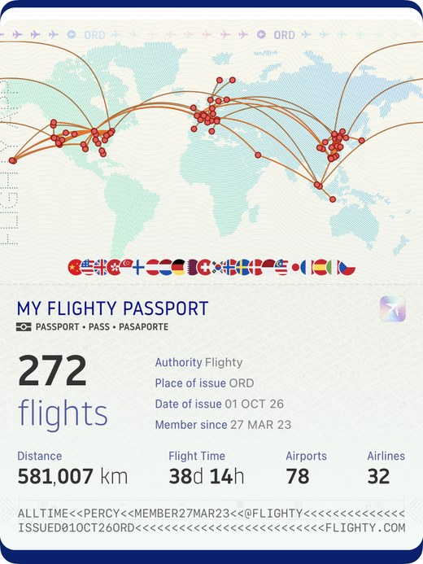

Percy S. Zhai
 |
I am a Ph.D. candidate in Econometrics and Statistics at the University of Chicago Booth School of Business. I received an M.S. in Statistics from the University of Chicago and a B.S. in Physics from the Special Class for the Gifted Young at the University of Science and Technology of China. I am on the 2026–2027 job market. |
Research Interests
Time series: long-range dependence, simultaneous inference for covariance and precision matrices
Bayesian inference: Horseshoe priors, minimax predictive inference
Graphical models: high-dimensional Gaussian graphical model testing, functional graphical models
Simulation-based inference: generative amortized posterior samplers, conditional flow matching, summary statistics
Academic Service
Reviewer for The Annals of Statistics (3 papers)
Reviewer for Journal of the American Statistical Association, Theory and Methods (1 paper)
Reviewer for Journal of the Royal Statistical Society, Series B (1 paper)
Reviewer for major AI conferences (NeurIPS, ICML, ICLR, AISTATS, UAI)
Teaching
Statistics (Executive MBA, London and Hong Kong), 2023, TA
Outstanding Teaching Assistant Award (May 2024), received from two Chicago Booth Executive MBA cohorts, AXP-23 (Hong Kong) and EXP-29 (London). Each graduating Executive MBA cohort votes to select a single Outstanding Teaching Assistant.Contemporary Bayesian Inference (Ph.D.), 2026, TA
Business Statistics (MBA), 2022–2026, TA
Bayes, AI, and Deep Learning (MBA), 2022–2024 and 2026, TA
Data Intelligence (MBA), 2025, TA
Big Data (MBA), 2025, TA
Statistical Insight into Entrepreneurial Quantitative Consulting (MBA), 2023–2024, TA
Statistical Insight into Marketing, Consulting, and Entrepreneurship (MBA), 2021–2022, TA
Machine Learning (MBA), 2021, TA
Contact
Email: percysjzhai at uchicago dot edu
Address: The University of Chicago Booth School of Business, 5807 S Woodlawn Avenue, Chicago, IL 60637
Outside Research
|
 |
Outside research, I enjoy civil aviation and global traveling. The map shows the flights I have logged with Flighty. I post about flying on Instagram at @flyingstatistician. I also write a Chinese-language blog about flying on WeChat, under the Official Account 飞行的统计学家 (Flying Statistician). A representative post, Introduction to Flight Booking: How to Fly First and Business Class at a Low Cost, has over 20,000 reads. |